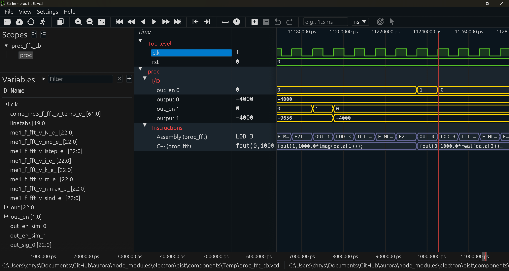

YANC
Yet Another Compiler
Write a program in C± or C++, and YANC carries it down, stage by stage, to a processor: the assembly, the synthesizable Verilog core, the memory images, the testbench. AURORA drives it with buttons. A shell script drives it just as well.
The name is a joke from the compiler tradition. The job is not.
In 1975, Bell Labs named its parser generator yacc: Yet Another Compiler-Compiler. Naming a serious tool as if it were one more of the same is an old habit of people who build compilers, and YANC, Yet Another Compiler, stands in that lineage on purpose. What it does is less usual. Most compilers translate a program into instructions for a processor that already exists. YANC reads your program and emits the processor itself: a SAPHO core in synthesizable Verilog, shaped around that one algorithm, with its program and data memories and a testbench ready to run.
The suite is five small binaries written in C, with lexers generated by Flex and parsers by Bison, built by GCC on Windows and Linux, plus two helpers that format waveforms for viewing. Its error messages come in two languages, Portuguese first and English on a flag, because the lab that wrote it teaches in Portuguese and publishes in English. Every one of the hundred-plus test programs in the repository ships with a frozen golden.asm and golden simulation output, so a change to any compiler has to reproduce the whole suite, byte for byte, before it lands.
Start from C± or from C++. Arrive at the same processor.
C± (read it C plus minus) is the house language: a compact subset of C extended for signal processing and physics. Its first lines are hardware, not code. #NUBITS picks the width of the datapath, #NBMANT and #NBEXPO define the floating-point format, and from there down you write ordinary loops and functions, with a native comp complex type, literals like 0.7071 + 0.7071i, and built-ins from sqrt to an FFT whose bit-reversed read has its own syntax, data[j).
C++ is the second front-end, and it is not a toy. cppcomp compiles a real subset, structs by value, destructors on early return, function pointers, std::array, lambdas as global initializers, through the same road: a #pragma yanc names the processor, and the output is the same assembly the C± compiler emits. Both languages meet in one backend and one core. Processor creation in C++ is now rolling into the platform as a first-class flow.
#PRNAME Sqrt #NUBITS 32 #NBMANT 23 #NBEXPO 8 #NDSTAC 5 #SDEPTH 5 float my_sqrt(float num) { if (num == 0.0) return 0.0; int v = (((num << 1) >>> 24) + 22) >>> 1; // get the exponent v = ((((v-22) << 23) + (1 << 22)) << 1) >> 1; float x; copy(v,x); x = 0.5 * (x+num/x); // four Newton steps x = 0.5 * (x+num/x); x = 0.5 * (x+num/x); x = 0.5 * (x+num/x); return x; }
From the test suite, trimmed. The header is the hardware; the body is a square root by Newton's method, seeded by a bit-trick on the float's exponent.
#pragma yanc prname test61 #include <array> constexpr int M_PULSE = 15; constexpr int C_PEAK = 5; // a lambda builds the pulse shape at compile time const std::array<float, M_PULSE> TRIANGLE_INIT = []() { std::array<float, M_PULSE> h = {}; constexpr float base[5] = { 0.25f, 0.5f, 1.0f, 0.5f, 0.25f }; for (int k = 0; k < 5; ++k) { int idx = C_PEAK + (k - 2); if (idx >= 0 && idx < M_PULSE) h[idx] = base[k]; } return h; }(); void main(void) { for (int k = 0; k < M_PULSE; k = k + 1) out(0, (int)(TRIANGLE_INIT[k] * 1000.0f)); }
Also from the test suite, trimmed. Modern C++ shaping a triangular pulse, the kind of waveform a calorimeter front-end sees, compiled to the same SAPHO assembly.
Five binaries, one descent
Each stage is a separate program with one job, in the old Unix way. The front-ends translate your language into SAPHO assembly. appcomp makes a first pass over that assembly and resolves every variable and label to an address. asmcomp then writes the hardware: the processor, its memories, its testbench. From there it is simulation and reading waves.
After YANC: simulate and watch
A language that writes ⟨bra|ket⟩
C± reserves the # operator for Dirac assignment. Matrices and vectors move in the bra-ket notation physics already writes on paper, after Dirac's 1958 formulation, and the compiler turns each line into the exact sequence of multiply-accumulates it means. These lines are from the test suite, verbatim:
A # 1.0|I|; a # |0⟩; a # |B|a⟩; a # 2.0|b⟩; A # |a⟩⟨b|; a # 0.001|in(0)⟩;
A # 1.0|I|initialize A as the identity matrixa # |0⟩zero the vectora # |B|a⟩matrix times vector: a = B·aa # 2.0|b⟩scale a vector: a = 2bA # |a⟩⟨b|outer product: A = a·bᵀa # 0.001|in(0)⟩read an input port into a vector, scaledNot a demo syntax. The declaration forms carry a real recursive-least-squares filter in the proc_rls test, the kind of adaptive filter the lab puts on FPGAs.
The waveform knows your source code
Because the compilers emit a table mapping every program-counter value back to the C± line that produced it, and every variable to its data-memory address, the waveform is not a wall of buses. Alongside the clock you see the source line currently executing, the assembly opcode under it, and each of your variables as a proper signal, updating as the processor writes it. Debugging feels like stepping through code, except the thing stepping is hardware.
All of that visibility lives behind a simulation-only flag, YANC_SIM_VIS. Turn it off, or synthesize for real, and it costs zero gates.
AURORA opens these traces in Surfer or in GTKWave; the lab maintains a fork of each, and today the two are equals in ease of use. The captures on this page come from Surfer.

Nothing you don't use gets built
The SAPHO instruction set is parameterized by the compiler. If your program never divides, the divider is never synthesized; if it never touches floating point, there is no floating-point unit. Word width is yours to choose, and shaving three bits off a mantissa is a real decision with a real payoff in logic. This is the compiler's half of SAPHO's thesis, and it has numbers behind it, measured on the ATLAS Tile Calorimeter work that YANC was born to serve.
Get YANC
If you use AURORA, you already have it: the IDE downloads the compilers on first launch and keeps them current. Standalone, grab the binaries from the latest release, Windows zip or Linux tarball, and drive the whole descent from one script.
# once: fetch toolchain deps $ Scripts/setup.sh # the whole descent, one command (bundled example: an order-8 FFT) $ Scripts/single_proc.sh $ Scripts/single_proc.sh --sim verilator # the C++ flavor $ Scripts/single_proc_cpp.sh